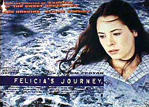

Contents | Features | Reviews | Books | Archives | Store |
 |
|
| Movie Credits | Buy It! |
Felicia's Journey
Review by
Cynthia Fuchs
Posted 19 November 1999
|  | ||
|
Written and Directed by Atom Egoyan Starring Claire Benedict, Brid Brennan, Elaine Cassidy, Sidney Cole, Kriss Dosanjh, Bob Hoskins, Nizwar Karanj, Arsinée Khanjian, Peter McDonald, Gerard McSorley, Sheila Reed, Danny Turner, Ali Yassine |
In
the movies, serial killers tend to have signature pathologies. While their
personal backgrounds may be trotted out to explain murderous habits (for
instance, Norman Bates had an overbearing mother, Michael Meyers had a naughty
sister), they're best known for their sensational styles: they wear
knife-fingered gloves, hockey masks, or cheesy Halloween costumes; they film or
tape their crimes (Peeping Tom, Strange Days), arrange murder
scenes by biblical dictates (Seven) or subway maps (The Bone Collector),
or eat victims with silverware (Silence of the Lambs).
All
of the above surely makes for chilling imagery, the common currency of serial
killer movies (John McNaughton's brilliant Henry: Portrait of a Serial Killer
is the exception that proves the rule, in its depiction of Henry's prosaic
incoherence, his acute understanding of randomness as the key to his survival).
But for all the horrific carnage, what's usually missing in serial killer
pictures is any insight into the social conditions that produce such monsters.
The imagery allows for everyone watching to experience anxiety -- indeed, this
is the point: you feel afraid or creeped out -- but you rarely come away
with a sense of how culture works, or why serial killers have become such
intriguing and profitable figures. Instead, the killer is the culprit: he (and
he's almost always a he) is inscrutable or explicable, but he is singular and
anomalous; once caught or slain by the film's hero, he's done, categorized and
removed from the rest of us. Whew.
The
Canadian-based filmmaker Atom Egoyan has taken a different approach to the
serial killer in his new film, Felicia's Journey. There's not much here
that you would call sensational, no decapitated corpses, no flayed flesh, no
nymphets taking ominous phone calls. Rather, the movie follows two characters,
neither one particularly introspective or self-aware, and both feeling nostalgia
for what never was. Seventeen-year-old Irish lass Felicia (Elaine Cassidy)
arrives in a small industrial English town, looking for Johnny, her erstwhile
lover (Peter McDonald), father of her unborn child. She thinks he's working in a
factory somewhere, dismissing the rumors that he's joined the British Army.
Banished from home by her Irish Catholic dad (Gerald McSorley), Felicia hopes
against hope to find her man and live happily ever after.
Instead,
she meets Hilditch (Bob Hoskins), fastidious manager of a catering company.
Seeing that she's alone and weary, he offers to drive her to a factory some
fifty miles away, to look for Johnny. During the drive, they share some stories
about themselves, and eventually Hilditch -- playing a perverse father -- begins
to advise her on her plight. Specifically, he suggests that she get an abortion,
which he also offers to pay for. What's most ironic and unnerving in this
scenario is the reason that Hilditch makes this suggestion, which is that he is
a serial killer, wanting to murder Felicia, but horrified at the idea of killing
the fetus.
As
in Egoyan's previous films (most notably, Family Viewing, Exotica,
and The Sweet Hereafter), you learn more about these characters than they
do of each other, even more than what they know of themselves. You see Felicia's
background unfold in bits of flashbacks: she appears like an advertising placard
for Ireland as she walks through glorious fields, falls for Johnny's easy charm,
and cares for her invalid grandmother, accompanied by Mychael Danna's broodingly
militaristic score. Felicia's memories take on the look of dreams, set against
grand cliffs and skies, her pale face determined and pink-cheeked as she
traipses what seem miles to visit with Johnny's mother (Brid Brennan), who is
increasingly and visibly angry at the girl's persistence. Undeterred, Felicia
undertakes her broadly romantic journey, initially hopeful, clearly naive, but
resilient in her way.
By
contrast, Hilditch's character comes into focus by way of tics and technologies.
Obsessed with his dead mother Gala (Arsinee Khanjian), he watches her every
night on videotapes of a 1950s cooking show, where she seems a faux-French
parody of Julia Child or an eerie precursor of Martha Stewart, the consummate
domestic despot. You see Hilditch preparing lavish meals according to Gala's
performed instructions, using circa-50s automatic mixing bowls that bear her
name (he has dozens of them stacked up in the pantry) and exotic ingredients.
Then he eats, the table properly set with water and wine glasses and china,
still watching the ghostly Gala on the kitchen TV, using her opera glasses in
order to see her from the dining room. Sometimes the grown Hilditch remembers --
or maybe he reimagines -- instances when Gala shoos him off the set or stuffs
bits of food into his mouth.
In
these scenes, the chubby child Hilditch looks embarrassed and resentful, and
he's usually wincing when the shot cuts back to him in adult present-time. But
the direct-connect between his recalled traumas and his violent acting-out is
never made clear. The film seems less interested in explaining or even narrating
his behavior than in displaying how adept he has become at denial, or perhaps,
considering Felicia's own troubles, how families become vehicles for confusion
and apprehension.
You
only begin to grasp Hilditch's heinousness as you see bits of videotapes that he
has made himself, showing a series of young girls he has given lifts in his car
(the same car he uses to drive Felicia around). Predictably, given his rage for
order, he has these tapes titled and catalogued (just as he has his mother's
tapes filed away) and he can list all the girls' names, as if they are former
lovers. He calls the tape he makes of Felicia "Irish Eyes," intimating
his own desires for romance, his fantasies of capturing her for his very own,
smiling, shy, and appreciative forever.
Hilditch
slowly comes to recognize himself in these eyes, after years of deluding
himself. It's as if he can suddenly see, through another set of eyes. Likewise,
the film asks you to see through different eyes, to imagine Hilditch's capacity
for repression or Felicia's ability to fool herself about Johnny, or Hilditch,
for that matter. Perhaps the most egregious examples of willful blindness come
in a pair of religious zealots who come looking for Felicia, to "save"
her, though from what, they have no idea: they're in the souls business. The
women, gazing skyward, stumble upon Hilditch digging a grave for her in his
backyard. It's pure happenstance that they arrive when they do, and so, the
scene seems somewhat contrived for the plot.
But thematically, it's a fitting route to the denouement, as the women's appearance signals a larger cultural context: their fierce and unseeing faith parallels the very different beliefs so tenaciously held by Hilditch and Felicia. The journey, ultimately, belongs to all the characters, as they push on from pasts that cannot be undone or even remembered quite right, toward emotional and vaguely spiritual horizons that are only barely visible. And if this finale is a little unwieldy, the journey is fascinating.
Be sure to read the interview by Cynthia Fuchs and coverage from the Toronto International Film Festival by Carrie Gorringe..
Contents | Features | Reviews
| Books | Archives | Store
Copyright © 1999 by Nitrate Productions, Inc. All
Rights Reserved.